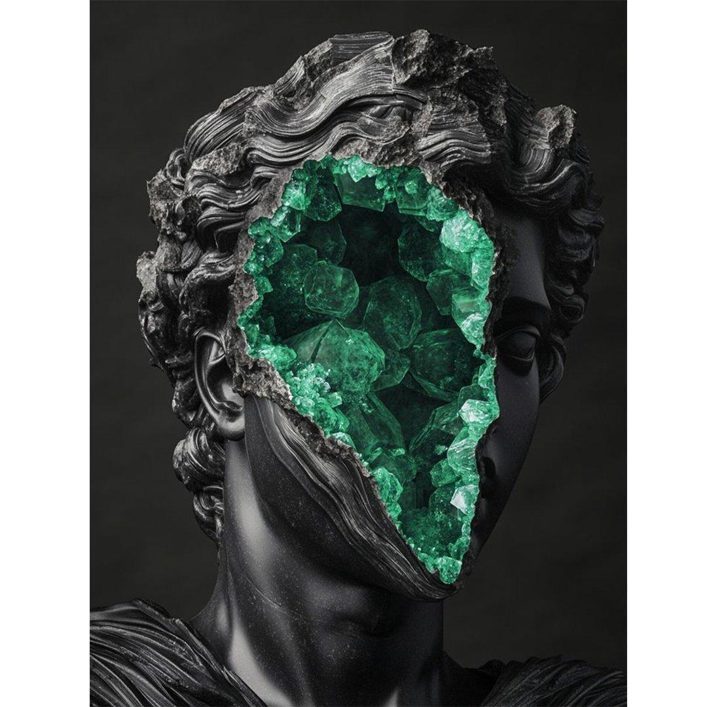

01
Web Development
Websites and web applications built on foundations that don't shift under load. We write front-end and back-end code meant to be read by the next engineer, not just shipped by this one.
Emerald is a five-discipline studio that treats every product like a dig site — we clear away what's unnecessary until the right idea is sitting in the open, clean and load-bearing.

What's underneath, made visible.
We started Emerald on a simple annoyance: too many studios treat design, code, security, growth and infrastructure as five separate vendors who happen to share an invoice template. We build them as one skill, applied by one small team, from the first sketch to the thing that's actually live.
That means no relay race between departments, no brief that gets reinterpreted three times before it reaches the person writing code, and no security or infrastructure thinking bolted on after launch as an apology. It's slower to hire this way. It's faster to ship.
Each service below runs independently when you need it to, and locks together seamlessly when you don't. Click a crystal above, or a heading below — both lead to the same place.
Websites and web applications built on foundations that don't shift under load. We write front-end and back-end code meant to be read by the next engineer, not just shipped by this one.
Product design grounded in how people actually behave, not how a moodboard wants them to. Research, design systems and prototypes that hold up once real content and real users arrive.
Security woven into the build, not inspected in afterwards. We audit applications and infrastructure, close the gaps we find, and set up monitoring so the next gap gets caught early. No system is unbreakable — ours are built to fail safely and get noticed fast.
Brand strategy and growth work that assumes people are busy and skeptical, because they are. We build campaigns, content and SEO foundations that earn attention instead of renting it, then prove it with numbers you can check.
Cloud infrastructure and delivery pipelines that let you ship on a Friday without dread. Infrastructure as code, automated deployment and monitoring built so scaling up is a config change, not a re-architecture.
Every engagement moves through the same strata. Slower at the top, faster once we hit rock.
We ask what's actually broken, sit with your data and your users, and resist the urge to propose a solution before we understand the problem.
Information architecture, technical approach and design direction get decided together, so nobody is redesigning around a database decision made without them.
Design and engineering move in parallel, in short cycles, with working software early — not a static comp that nobody's tested against real content.
We test with real users, run security and performance passes, and cut anything that doesn't earn its place before it reaches production.
We ship, watch the metrics that matter, and stay close enough afterward to catch what only real traffic reveals.
A representative sample of the kind of work we take on — concept case studies illustrating our range across disciplines.
A neobank platform rebuilt for speed and trust — a full front-end rewrite plus a fraud-monitoring layer clients never see until it matters.
A luxury fashion house's e-commerce experience, designed to feel as considered on a phone as it does in their flagship store.
A real-time infrastructure monitoring platform for a security vendor, built to surface the one alert that matters out of ten thousand.
A portfolio site for an architecture studio, where every project page loads like a slow, deliberate walk through the building.
A creative writing tool's public launch, from onboarding flow to the infrastructure that kept it upright on launch day.
An antique dealer's storefront, rebuilt so provenance photography and detail actually get the space they deserve online.
Emerald was the first studio we hired that pushed back on our own brief — and they were right to. The product that shipped was better than the one we asked for.
Most vendors hand off a security report and disappear. Emerald's team stayed until every finding was actually closed, then told us what to watch for next.
I've worked with agencies that outsource the "boring" parts. Emerald treated our infrastructure with the same care they gave the homepage. It showed on launch day.
They asked harder questions about our customers than our own research team had. The redesign converted almost twice what the old site did.
Tell us what you're building. We'll reply within two business days with real thoughts, not a form-letter.